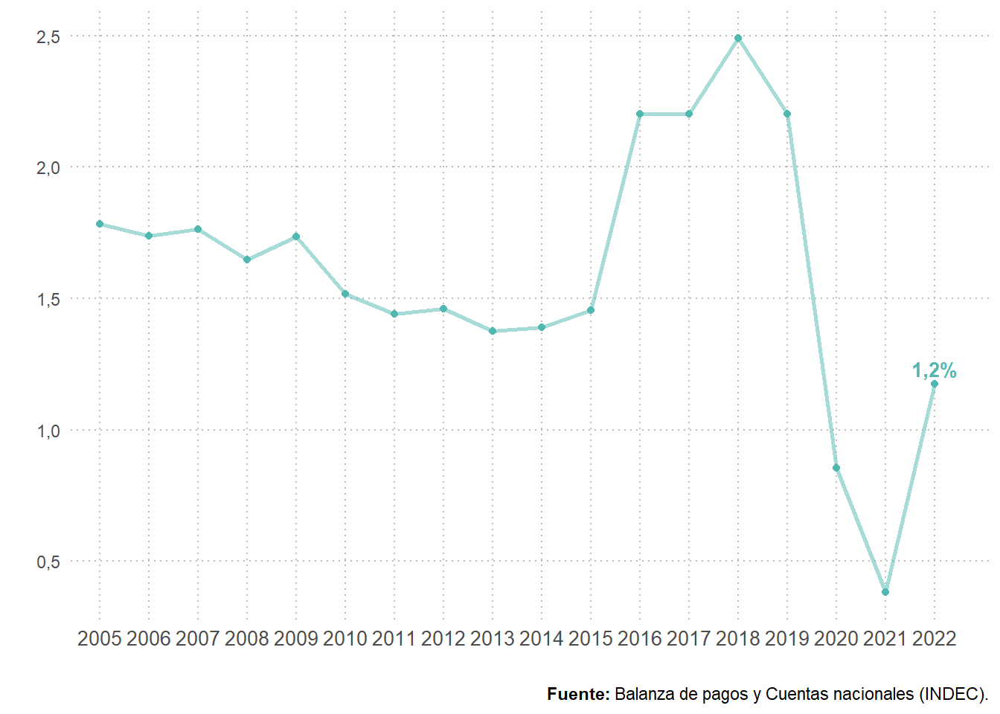
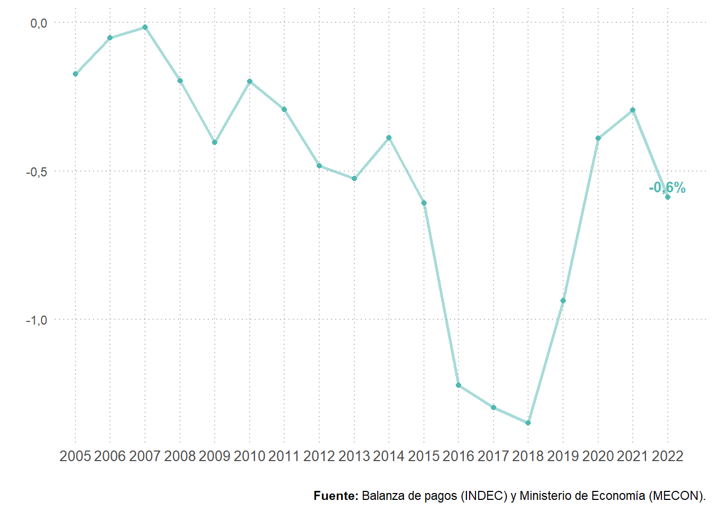
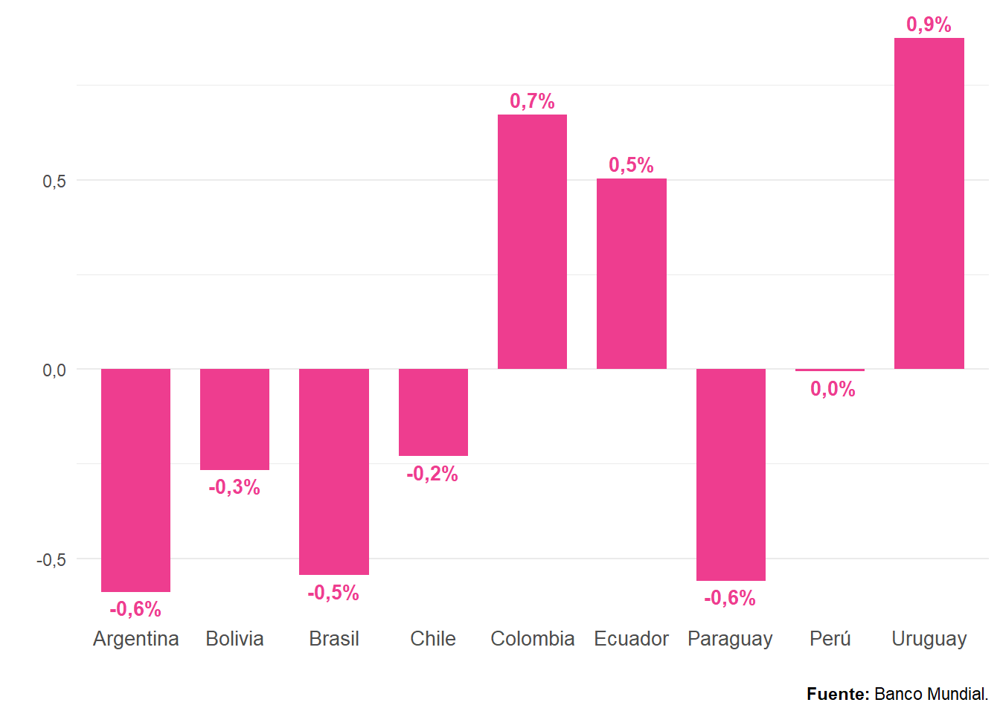
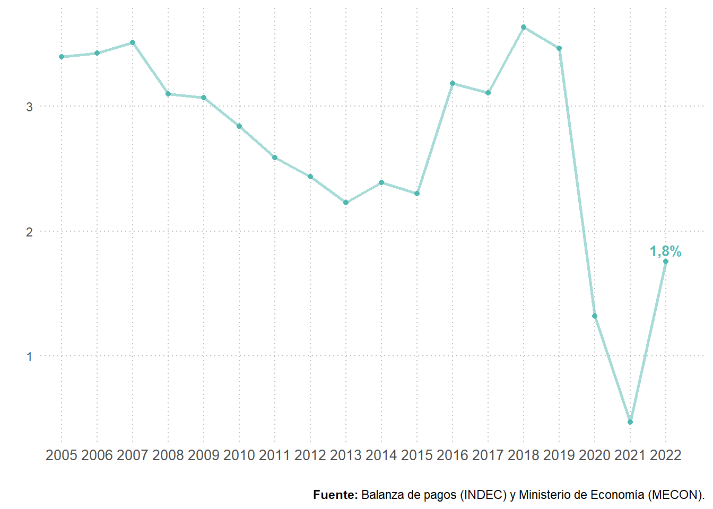
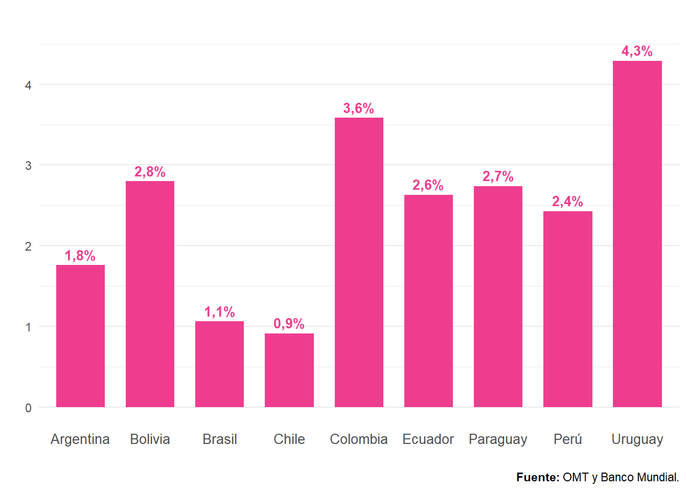
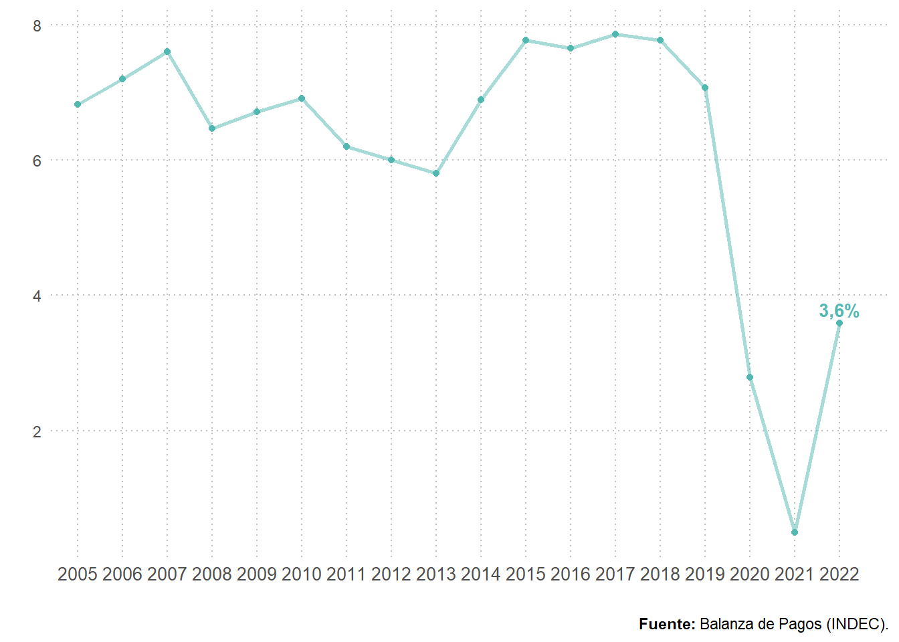
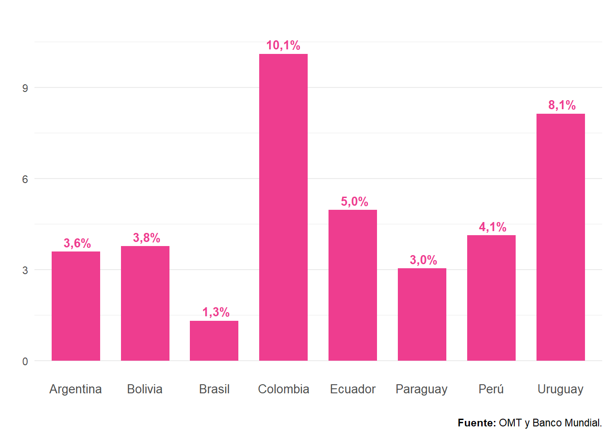
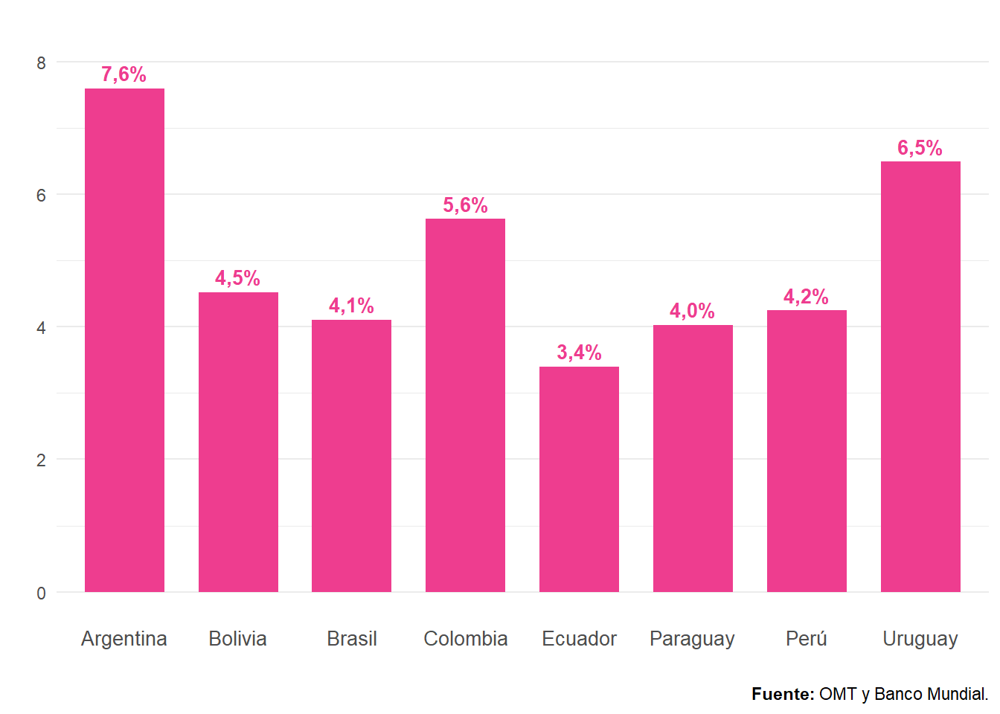
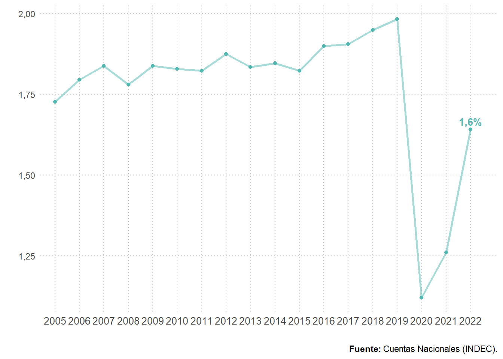
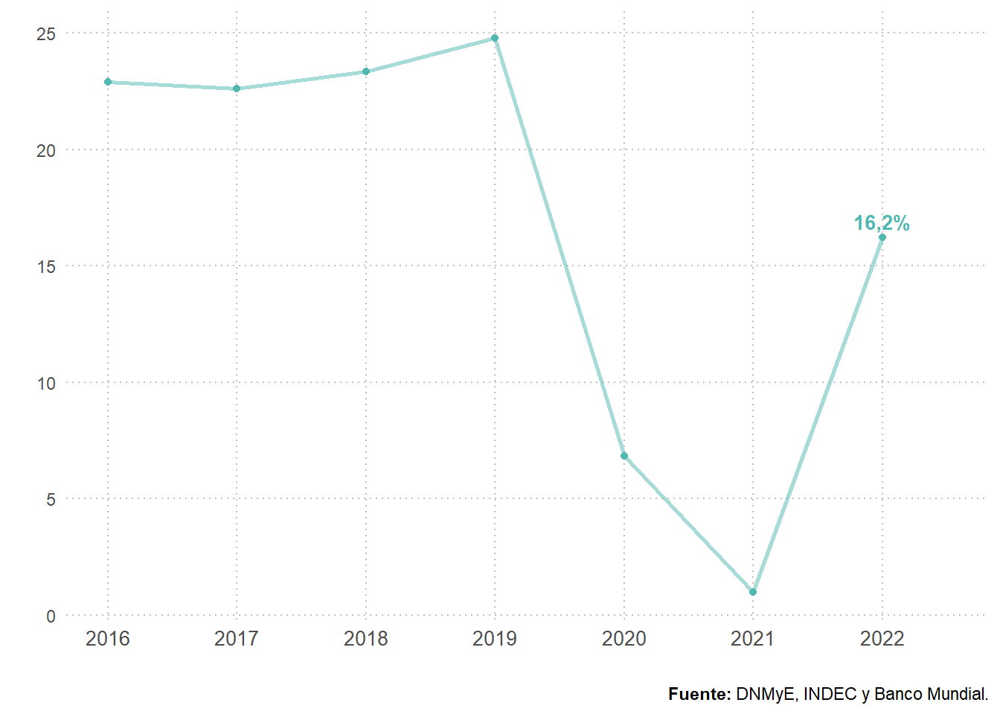

Capítulo 8 Indicadores económicos del turismo
8.1 Introducción
En esta sección se presenta una serie de indicadores económicos con el objetivo de ver la importancia de la actividad turística en la economía del país y un análisis de la evolución de su incidencia durante el período 2005-2022. Asimismo, con el fin de contextualizar a nuestro país en la región, se replicaron estos indicadores para un conjunto de países de Sudamérica que contaban con información disponible.
Los indicadores fueron construidos a partir de fuentes estadísticas de la República Argentina, siguiendo las recomendaciones propuestas por la Organización Mundial del Turismo (OMT) y la Comisión Económica para América Latina y el Caribe (CEPAL)10. Se utilizan las estimaciones de la cuenta viajes del Balance de Pagos como una aproximación al consumo del turismo receptor (crédito) o al consumo del turismo emisor (débito). Además, se considera a la rama de actividad Hoteles y Restaurantes de las Cuentas Nacionales como el componente principal del Valor Agregado Turístico. Cabe destacar que, desde febrero de 2022, se encuentran disponibles los resultados de la Cuenta satélite de turismo de la Argentina (CST-A) para la serie 2004 y 2016-2019. La misma proporciona el marco para la medición de la contribución del sector turístico a la economía y sus interrelaciones con el resto de las actividades. Próximamente se encontrarán disponibles los resultados correspondientes a los años 2020, 2021 y 2022.
El desafío es lograr construir series históricas de indicadores macroeconómicos de la actividad del turismo, con el propósito de generar herramientas que faciliten el análisis y permitan así determinar la relevancia económica del turismo en el país y, asimismo, sirva de guía de comparación internacional.
Por tanto, este conjunto de indicadores analiza los consumos turísticos en relación al Producto Interno Bruto (PIB), a las exportaciones e importaciones de bienes y servicios; el valor agregado bruto de hoteles, bares y restaurantes en el PIB, entre otros, para poder aproximar la contribución del turismo a la economía en el periodo 2005-2022.
8.2 Sector externo
Peso del consumo turístico receptor11 en el PIB:
Este primer indicador refleja la importancia relativa del turismo receptor (medido a través del gasto de los turistas no residentes que visitan el país) en la economía (representada por el PIB). Cuanto mayor sean los ingresos económicos en concepto de turismo receptivo, dado el tamaño del PIB, mayor será el valor de este indicador.
El indicador es calculado de la siguiente manera: \[ \frac{Consumo\space turístico\space receptor}{PIB}\times 100\% \]
En el año 2022, el ratio ingresos por turismo receptivo sobre PIB fue de 0,6%, lo que representa una variación positiva de 0,5 puntos porcentuales (p.p.) con respecto al año anterior. La retracción del indicador, del año 2020 en adelante se encontró directamente relacionada con el impacto que recibió el sector por la pandemia del COVID-19.
Figura 8.1: Peso del consumo turístico receptor en el PIB. Total país. Años 2005-2022. En porcentaje.

En el contexto sudamericano, los países que presentaron los mayores pesos del consumo turístico receptor como porcentaje del PIB de la región fueron: Uruguay (2,58%), Colombia (2,13%) y Ecuador (1,57%).
Figura 8.2: Peso del consumo turístico receptor en el PIB. Total países de Sudamérica. Año 2022. En porcentaje.

Consumo turístico emisor en el PIB:
La participación del consumo turístico emisor en el PIB describe la importancia relativa del turismo emisor en la economía del país (representada por el PIB). Mientras mayor sea el valor de dicho indicador, el turismo emisor será más importante desde el punto de vista económico, dado un nivel de PIB.
El indicador es calculado de la siguiente manera: \[ \frac{Consumo\space turístico\space emisor}{PIB}\times 100\% \]
En el año 2022, el ratio egresos por turismo emisivo sobre PIB fue de 1,2%, lo que representó una variación positiva de 0,8 p.p. respecto al año anterior.
Figura 8.3: Peso del consumo turístico emisor en el PIB. Total país. Años 2005-2022. En porcentaje.
En el contexto sudamericano, los países que presentaron los mayores pesos del consumo turístico emisor como PIB de la región fueron: Uruguay (1,71%), Paraguay (1,65%) y Bolivia (1,53%).
Figura 8.4: Peso del consumo turístico emisor en el PIB. Países de Sudamérica. Año 2022. En porcentaje.

Balanza turística en relación al PIB:
La participación relativa de la balanza turística en el PIB describe el impacto neto del turismo internacional en la producción de un país. Si el consumo turístico receptor es superior al consumo turístico emisor, el resultado es un superávit de la balanza turística; y viceversa: si el gasto turístico emisor es superior al receptor, el saldo es negativo y representa un déficit de la balanza turística. Su relación con el PIB permite medir su importancia económica.
La evolución de ese indicador es crucial para la actividad económica y turística de un país. En este sentido, un déficit turístico persistente implica que se destina una mayor parte de “la renta” generada en el país para ser consumida en el exterior que la producción compensatoria generada por el consumo del turismo receptor.
El indicador es calculado de la siguiente manera: \[ \frac{Consumo\space turístico\space receptor-Consumo\space turístico\space emisor}{PIB}\times 100\% \]
Para 2022, este indicador alcanzó un nivel de -0,6%, reflejando la relevancia del saldo negativo del turismo para la economía argentina.
Figura 8.5: Balanza turística sobre PIB. Total país. Años 2005-2022. En porcentaje.
En la comparación regional los países que presentan superávit en su balanza turística fueron: Uruguay (0,87%), Colombia (0,87%) y Ecuador (0,87%). Estos resultados podrían estar relacionados con el nivel de ingresos por habitante y la cantidad de habitantes que tiene cada país.
Figura 8.6: Balanza turística sobre PIB, países de Sudamérica. Año 2022. En porcentaje.
Grado de apertura turística:
El grado de apertura turística de un país describe la importancia del gasto turístico internacional, tanto en términos de ingresos como egresos, en la economía del país. De este modo, permite medir el grado de “internacionalización” de una economía en términos turísticos. Mientras mayor sea el valor de dicho indicador, el turismo internacional será más importante desde el punto de vista económico, para un nivel de PIB dado.
El indicador es calculado de la siguiente manera: \[ \frac{Consumo\space turístico\space receptor+Consumo\space turístico\space emisor}{PIB}\times 100\% \]
En el año 2022, este indicador registró un nivel de 1,8%, es decir 1,3 p.p. por encima del nivel del año anterior.
Figura 8.7: Grado de apertura turística. Total país. Años 2005-2022. En porcentaje.
En la comparación regional los países que se destacan por su turismo internacional desde el punto de vista económico fueron: Uruguay (4,29%), Colombia (3,59%) y Bolivia (2,8%).
Figura 8.8: Grado de apertura turística. Total Sudamérica. Año 2022. En porcentaje.
Grado de cobertura turística:
El grado de cobertura turística describe la relación entre los ingresos de divisas asociados al gasto turístico receptor y el egreso de divisas por turismo emisor. Representa la capacidad del turismo receptivo de “financiar” las divisas demandadas por los gastos que realizan los residentes cuando visitan el resto del mundo. El indicador será mayor que 100 si las corrientes monetarias asociadas al turismo entrante son superiores a aquellas vinculadas con el turismo emisor. Y viceversa: si el indicador es inferior a 100, el gasto turístico receptor es menor que el gasto turístico emisor, y por ende el turismo demanda divisas generadas en otra actividad. El indicador vincula directamente los flujos monetarios en entrada y en salida por motivos turísticos.
El indicador es calculado de la siguiente manera: \[ \frac{Consumo\space turístico\space receptor}{Consumo\space turístico\space emisor}\times 100\% \]
En el año 2022 el grado de cobertura fue de 49,8%; esto significa que de cada cien dólares gastados fuera del país por turistas argentinos, 49,8 fueron “cubiertos” por ingresos de divisas del turismo receptivo.
Figura 8.9: Grado de cobertura turística. Total país. Años 2005-2022. En porcentaje.

En la comparación regional, la mayoría de los países exhiben un grado de cobertura inferior a 100. Superando este nivel se encontraron Uruguay, Colombia y Ecuador. Es decir que, en esos países, los ingresos por turismo receptivo superaron a los egresos en un 51,2%, 46,1% y 47,2% respectivamente.
Figura 8.10: Grado de cobertura turística. Países de Sudamérica. Año 2022. En porcentaje.

Consumo turístico receptor sobre exportaciones de bienes y servicios:
Cuando un turista no residente consume un bien o servicio en nuestro país, este gasto es considerado una exportación de servicios turísticos. La participación relativa del gasto turístico receptor en las exportaciones de bienes y servicios es un indicador que describe su importancia en relación al total de ventas de bienes y servicios de Argentina al exterior. Mientras mayor sea el valor de dicho indicador, mayor será la especialización turística del país.
El indicador es calculado de la siguiente manera: \[ \frac{Consumo\space turístico\space receptor}{Exportaciones\space de\space bienes\space y\space servicios\space}\times 100\% \]
En el año 2022 los ingresos por viajes y pasajes representaron el 3,6% de las exportaciones totales.
Figura 8.11: Participación del consumo turístico receptor sobre exportaciones de bienes y servicios. Total país. Años 2005-2022. En porcentaje.
En la comparación regional, los países con mayor especialización turística fueron: Colombia (10,1%), Uruguay (8,13%) y Ecuador (4,96%).
Figura 8.12: Participación del consumo turístico receptor sobre exportaciones de bienes y servicios. Países de Sudamérica. Año 2022. En porcentaje.
Consumo turístico emisivo sobre importaciones de bienes y servicios:
La participación del consumo turístico en el valor de las importaciones de bienes y servicios describe la importancia relativa del turismo emisor en la compra de productos (bienes y servicios) del exterior.
El indicador es calculado de la siguiente manera: \[ \frac{Consumo\space turístico\space emisor}{Importaciones\space de\space bienes\space y\space servicios\space}\times 100\% \]
En el año 2022, los egresos por viajes y pasajes representaron el 7,6% de las importaciones totales.
Figura 8.13: Consumo turístico emisivo sobre importaciones de bienes y servicios. Total País. Años 2005-2022. En porcentaje.

En la comparación regional, los países con el mayor peso de las importaciones de turismo en el comercio exterior fueron: Argentina (7,6%), Uruguay (6,5%) y Colombia (5,63%).
Figura 8.14: Consumo turístico emisivo sobre importaciones de bienes y servicios. Países de Sudamérica. Año 2022. En porcentaje.
8.3 Valor agregado bruto en ramas turísticas
Valor agregado bruto (VAB) de hoteles, bares y restaurantes:
El VAB de los Hoteles, Bares y Restaurantes es la suma de los valores monetarios de los bienes y servicios producidos en esos establecimientos en un determinado periodo, generalmente un año. Este indicador permite evaluar la actividad económica, y realizar comparaciones de los niveles de producción en distintos periodos.
En el año 2022, el VAB de este sector alcanzó los 9.923,1 millones de pesos (a precios de 2004). Esto representó un crecimiento respecto al año anterior (36,7%), no obstante, aún no logró igualar la tendencia de los años 2010-2019, en donde el indicador se posicionaba entre los 10.000 y 11.500 millones de pesos. Comparando con el nivel prepandemia (2019), se ha recuperado un 169,6%.
Figura 8.15: Evolución del valor agregado bruto (VAB) de hoteles y restaurantes. Años 2005-2022.

Importancia del valor agregado bruto de hoteles, bares y restaurantes en el VAB total:
La participación del valor agregado bruto generado en la actividad de los hoteles, bares y restaurantes en el VAB total describe la importancia de esa actividad en la economía del país.
En el año 2022, la incidencia del VAB del sector en el VAB total fue de 1,6% (0,4 p.p. var i.a.). Sin embargo, este nivel aún no logró alcanzar el de prepandemia (2019), cuando el indicador se posicionaba en 2%.
Figura 8.16: Importancia relativa del valor agregado bruto de hoteles y restaurantes en el VAB total. Total País. Años 2005-2022. En porcentaje.
8.4 Carga turística
La carga turística es el ratio entre el número de turistas/visitantes no residentes y la población total del país. El indicador es importante para el análisis del desarrollo del turismo; su evolución en el tiempo ofrece una referencia de la capacidad del país para recibir a los visitantes no residentes, bajo el supuesto de que la infraestructura disponible y los demás servicios no varíen considerablemente de un año a otro.
El indicador es calculado de la siguiente manera: \[ \frac{Turistas\space no\space residentes}{Población\space}\times 100\% \] \[ \frac{Visitantes\space no\space residentes}{Población\space}\times 100\% \]
Las graves consecuencias de la pandemia por Covid-19 en el sector turístico se vieron reflejadas en este indicador. El mismo alcanzó un 8,4% en el año 2022, demostrando así una variación de 7,8 p.p. respecto al año anterior.
Figura 8.17: Carga turística (turistas).Total País. Años 2005-2022. En porcentaje.

Por su parte, a partir del 2016, la DNMyE comenzó a relevar el dato de visitantes (turistas+excursionistas). Para este caso, el indicador se posicionó en 16,2% (15,2 p.p. var i.a.).
Figura 8.18: Carga turística (visitantes).Total País. Años 2005-2022. En porcentaje.
En la comparación regional, los países con mayor carga turística de turistas en 2022 fueron: Uruguay (70,99%), Chile (10,36%) y Paraguay (8,55%).
Figura 8.19: Carga turística (turistas). Países de Sudamérica. Año 2022. En porcentaje.

8.5 Recursos disponibles
Los datos de cantidad de turistas y visitantes que se muestran en este capítulo forman parte del Sistema de Información Turística de la Argentina (SINTA) https://www.yvera.tur.ar/sinta/ de la Dirección Nacional de Mercados y Estadística (DNMyE). Los mismos se presentan a través de distintos formatos:
Informes: publicación mensual de los datos del turismo receptivo y emisivo de la Argentina (residentes en el extranjero que visitan el país y residentes argentinos que viajan al exterior, respectivamente) estimados en base a los registros migratorios provistos por la Dirección Nacional de Migraciones (DNM) y la Encuesta de Turismo Internacional (ETI).
Tablero: para la consulta de datos desagregados de las estimaciones históricas de Turismo Internacional.
Reporte: presenta la última información de turismo receptivo, emisivo y balanza turística por todas las vías (aéreo, terrestre y fluvial / marítimo).
Datos Abiertos: el portal incluye un conjunto de datasets y recursos disponibles en diferentes niveles de desagregación y en variados formatos en caso de que se necesite un reprocesamiento de los mismos.
Otros datos fueron recolectados de fuentes externas, tales como:
Agregados macroeconómicos (PIB), INDEC: se utilizaron los datos definitivos del producto interno bruto en términos constantes para la serie 2004-2019.
Producto Interno Bruto, Datos Argentina: para los datos de PIB en dólares (a precios corrientes) de Argentina.
Balanza de pagos, INDEC: para los datos de consumo turístico y la información del comercio exterior de Argentina.
Proyecciones de población, INDEC: para los datos de población a partir de 2010.
Base de datos de estadísticas de turismo, OMT: para los datos de consumo turístico y cantidad de turistas/visitantes de los países de Sudamérica.
Indicadores del Banco Mundial: se utilizaron los datos de PIB (en dólares a precios actuales), datos de exportaciones e importaciones (en dólares a precios actuales) y datos de población para los países de Sudamérica. También se utilizaron los datos de población de Argentina hasta 2009.
“Proyecto de indicadores Básicos para el análisis del Turismo desde una Perspectiva Económica” OMT-CEPAL, Marzo 2005↩︎
Como consumo turístico receptor se consideró al gasto en viajes y pasajes de la Balanza de Pagos.↩︎